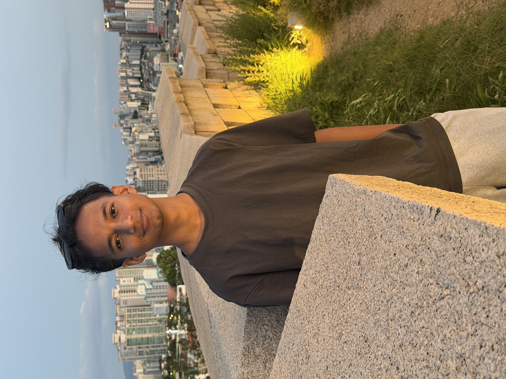

SEOUL · AI CONVERGENCE · STUDENT
Learning today.
Building tomorrow.
Hi, I'm AYUSH K C, a first-year AI Convergence student at Seoil University. I'm interested in AI, technology, gaming, travel, music, and creating things with technology.

AKAYUSH K CAI Convergence · Seoil University